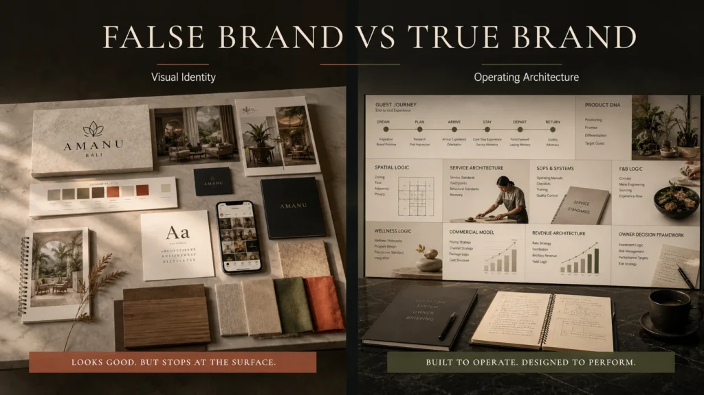
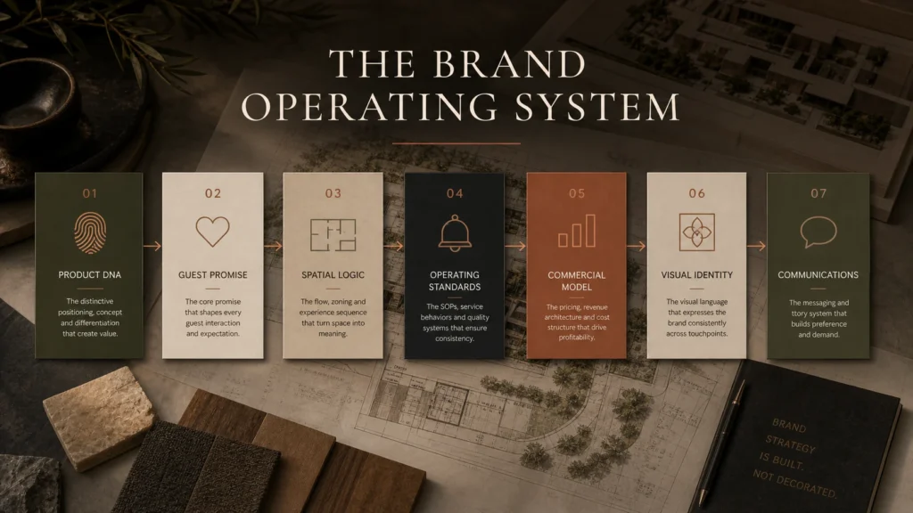
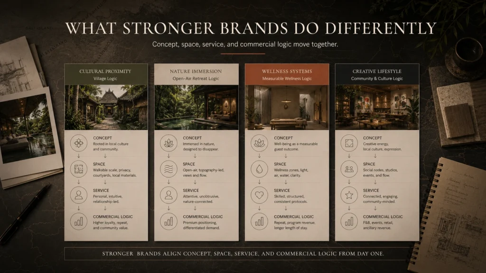
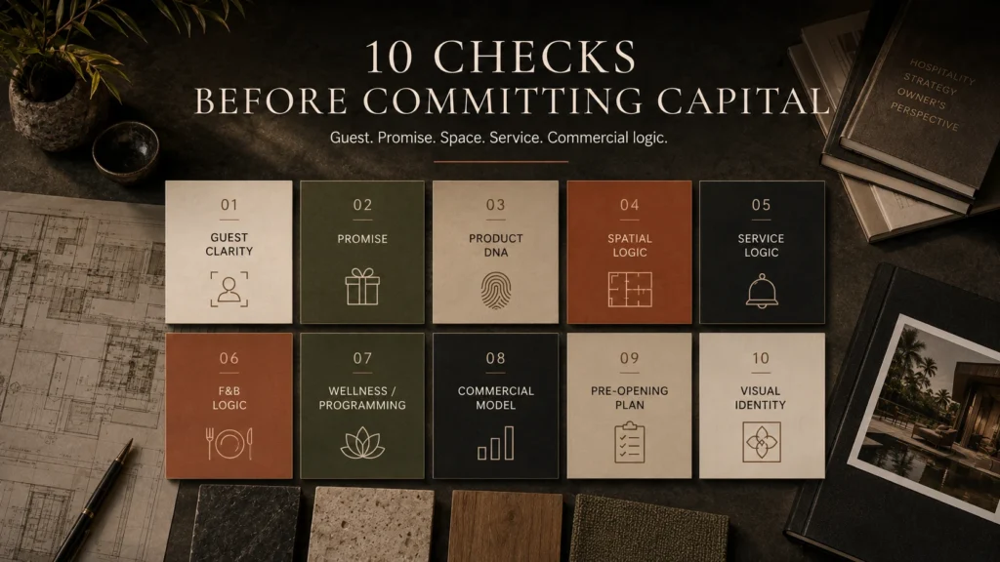

Bali boutique hotel brand architecture is often misunderstood. A logo, a color palette, and a set of Instagram-friendly fonts do not constitute a hotel brand. In Bali, many boutique hotels look finished from the outside but remain strategically unfinished underneath: no clear guest promise, no service philosophy, no operating behavior, no commercial logic, and no reason to defend rate once the first visual excitement fades.
For owners, developers, investors, and operators, Bali boutique hotel brand architecture is not a creative detail. It is an asset-performance issue. A boutique hotel without true brand architecture may open beautifully, attract attention, and still become commercially weak because the team has no operating system for delivering the promise every day.
Key Takeaways
- Brand architecture is not visual identity. It is the internal logic that connects guest promise, service behavior, spatial design, F&B, wellness, communications, and pricing.
- Many Bali boutique hotels are built in the wrong sequence. Land, architecture, interiors, and mood boards often come before guest logic and operating model.
- A weak brand becomes visible fast. Guests may admire the design on day one, but service inconsistency, generic programming, and unclear positioning are visible during the stay.
- Strong brand architecture supports commercial discipline. It helps owners protect positioning, rate logic, guest loyalty, review quality, and asset defensibility.
- The brand must be deployable by the team. If the front desk, spa, F&B, housekeeping, revenue manager, and GM cannot use it, it is not a real hotel brand architecture.
Why Bali Boutique Hotel Brand Architecture Matters Now
Bali remains one of Asia’s strongest hospitality markets, but the operating environment is becoming less forgiving.
According to BPS Bali tourism data, Bali recorded 572,668 foreign tourist arrivals in December 2025, while star-rated hotel occupancy reached 60.88%. This confirms demand depth, but it does not mean every hotel concept is protected.
At the same time, Colliers’ Q4 2025 Bali hotel report described a clear market paradox: rising tourist arrivals, worsening congestion, and rapid villa expansion are all pressuring hotel occupancy.
This is exactly the environment where weak boutique hotel concepts get exposed. When demand is strong, good design can hide strategic weakness. When competition rises, infrastructure becomes more difficult, and guests compare more options, the property needs something deeper than aesthetics.
It needs a reason to exist.
For a deeper related view on positioning and concept discipline, see Zenith’s article on Bali boutique hotel brand strategy.
The Core Problem: Bali Confuses Look With Brand
Many Bali boutique hotel projects begin with the visible parts:
- land location;
- architectural massing;
- interior mood boards;
- pool concept;
- restaurant look;
- logo;
- Instagram feed;
- lifestyle language.
Only later does the owner ask the harder questions:
- Who is the primary guest?
- Why will they choose this property over 20 similar alternatives?
- What is the promise of the stay?
- What does the team need to do differently?
- What should the hotel refuse to offer?
- What rate can this promise defend?
- What operating model is required to deliver it?
That sequence is backwards.
Bali boutique hotel brand architecture should not be added after the asset is already shaped. It should inform the asset before drawings, interiors, staffing, programming, and commercial assumptions are locked.
A boutique hotel brand is not the decorative layer placed on top of the project. It is the logic that should guide the project from the beginning.

What Bali Boutique Hotel Brand Architecture Actually Means
Hotel brand architecture is the system that defines how the property behaves, not only how it looks.
It should answer five owner-level questions:
| Question | What It Means |
|---|---|
| Who is the hotel for? | Primary and secondary guest segments, psychographics, stay motivations, and spend logic |
| What does the hotel promise? | The core guest outcome, not a list of adjectives |
| How does the asset express that promise? | Site, architecture, room mix, circulation, F&B, wellness, rituals, and programming |
| How does the team deliver it? | SOPs, training, service language, complaint handling, daily briefings, and standards |
| How does the business monetize it? | ADR, packages, ancillary revenue, direct booking, memberships, retreats, and partnerships |
A visual identity can express the brand. It cannot replace it.
A strong boutique hotel brand architecture should normally include:
- Product DNA;
- guest promise;
- positioning statement;
- target guest profile;
- experience principles;
- spatial logic;
- signature rituals;
- service philosophy;
- F&B logic;
- wellness logic;
- brand voice;
- SOP implications;
- commercial positioning;
- pre-opening activation logic;
- visual identity brief.
The visual identity comes late. The operating logic comes first.
For more on this sequence, see Zenith’s article on Hotel Product DNA.
What Most Owners and Developers Get Wrong
The most common mistake is assuming that a beautiful asset will automatically become a strong brand.
It will not.
In Bali, design is no longer rare. Bamboo, limewash, jungle bathrooms, curved pools, stone walls, alang-alang roofs, neutral linens, and soft wellness language are everywhere. These elements may still be attractive, but they are no longer enough to create defensibility.
The second mistake is chasing too many guests at once.
A property cannot credibly be all of the following at the same time:
- silent wellness retreat;
- digital nomad hub;
- honeymoon resort;
- family villa estate;
- party-friendly lifestyle hotel;
- culture-led boutique hideaway;
- retreat venue;
- F&B destination;
- spa resort;
- work-from-Bali base.
Owners often want broad appeal because broad appeal feels safer. In practice, it often creates the opposite: weak positioning, weak rate logic, generic programming, and inconsistent reviews.
The third mistake is writing brand words that operations cannot deliver.
Words like “transformational,” “community,” “authentic,” “healing,” “regenerative,” and “luxury lifestyle” are useless unless the owner can answer:
- What does this change in the arrival journey?
- What does the receptionist say differently?
- What does housekeeping prepare differently?
- What does breakfast communicate?
- What does the spa refuse to sell?
- What does the GM measure weekly?
- What does revenue management protect?
If the team cannot operationalize the words, the brand does not exist.
The Zenith View on Bali Boutique Hotel Brand Architecture
At Zenith, we treat Bali boutique hotel brand architecture as an operating system.
That means the brand must be visible in decisions, not only in design. It should define how the property behaves under pressure: when a guest complains, when occupancy is soft, when an influencer asks for barter, when the spa wants to add generic treatments, when the F&B team wants to copy a competitor, or when the owner asks for discounts to fill rooms.
A real brand architecture gives the team decision logic.
It tells them:
- what the hotel is;
- what the hotel is not;
- which guests matter most;
- which revenue is good revenue;
- which experiences are non-negotiable;
- which partnerships fit;
- which design choices support the promise;
- which shortcuts will damage the asset.
This is where many generic branding exercises fail. They produce a deck. They do not produce operating behavior.
For Zenith, the correct sequence is:
Product DNA → guest promise → spatial logic → operating standards → commercial model → visual identity → communications.
If the sequence is reversed, the asset may still look good, but the brand will be fragile.
This is also why weak brand architecture must be tested during feasibility, not after opening. A related owner-side risk is explained in Zenith’s article on why a hotel feasibility study is wrong when it relies only on ADR and occupancy assumptions without stress-testing product-market fit, rate defensibility, and operating risk.

Framework: Visual Identity vs True Brand Architecture
| Dimension | Visual Identity Only | True Brand Architecture |
|---|---|---|
| Starting point | Logo, colors, typography, mood board | Guest, promise, purpose, product logic |
| Primary output | Brand deck | Operating system |
| Owner value | Presentation polish | Asset defensibility |
| Team usability | Low | High |
| Design role | Decoration or style | Physical expression of the promise |
| F&B role | Menu as outlet offer | Menu as brand behavior |
| Spa / wellness role | Treatment list | Experience logic and credibility layer |
| Revenue role | Rate follows comp set | Rate follows concept strength and guest willingness to pay |
| Pre-opening role | Marketing launch | Hiring, training, SOPs, programming, commercial activation |
| Failure mode | Generic but attractive | Harder to copy, easier to operate consistently |
The point is not that visual identity is unimportant. It is important. But it should be the external expression of a deeper operating truth.
A logo can make the brand recognizable. It cannot make the brand operational.
Bali Case Patterns: What Stronger Brands Do Differently
The goal is not to copy successful Bali properties. Copying the surface is exactly the mistake.
The better lesson is to study how concept, space, service, and commercial positioning reinforce each other.
Amandari: Cultural Proximity as Brand Logic
Amandari is not simply “Balinese-inspired.” Aman describes Amandari as designed after a traditional Balinese village on the Ayung River Gorge, with free-standing suites reached by winding pathways and a swimming pool that mimics the rice paddies below.
The lesson is not “use Balinese architecture.”
The lesson is: choose one core promise and build the property around it.
Amandari’s brand architecture works because the concept is legible through site, architecture, circulation, atmosphere, and cultural proximity. It is not a generic luxury resort with Balinese decoration. The brand logic is embedded into the guest experience.
Buahan: “No Walls, No Doors” as Operating Reality
Buahan, a Banyan Tree Escape, does not merely use nature as a backdrop. Its official positioning describes an adults-only jungle hotel designed around immersion, deep rest, exploration, and reconnection.
This works because the concept has operational consequences.
A “no walls, no doors” promise affects:
- privacy;
- climate comfort;
- lighting;
- maintenance;
- housekeeping;
- pest control;
- guest briefing;
- staffing rhythm;
- F&B timing;
- safety;
- service recovery;
- expectation management.
A weaker owner would copy the open-air look and underestimate the operating model required to make it work.
Six Senses Uluwatu: Wellness Promise With Systems Behind It
Six Senses Uluwatu states that its wellness spa uses smart technology to measure inner health, movement, and sleep patterns so wellness experts can personalize treatments, activities, and nutritional advice.
The lesson is not “add wellness.”
The lesson is: if wellness is part of the brand, it must be structured, credible, and operationally supported. A spa menu with generic massages does not create a wellness brand. A wellness promise requires protocols, talent, guest education, space planning, and commercial packaging.

Operational Implications
Brand architecture changes how the hotel is built, opened, staffed, and managed.
1. Recruitment
A clear brand changes who you hire.
A culture-led boutique retreat may need hosts, storytellers, guides, and emotionally intelligent service leaders. A performance wellness hotel may need stronger technical wellness literacy. A lifestyle property may need F&B, events, and community programming strength.
If the brand is vague, recruitment becomes generic.
Generic recruitment produces generic service.
2. SOPs
SOPs should not only describe tasks. They should translate the brand into repeatable behavior.
| Brand Promise | SOP Implication |
|---|---|
| Silent recovery retreat | Low-noise arrival, phone etiquette, privacy rules, no aggressive upselling |
| Cultural immersion | Staff storytelling, village etiquette, temple calendar, guide standards |
| Performance wellness | Intake flow, recovery protocols, progress tracking, escalation rules |
| Creative lifestyle | Event calendar, music rules, F&B rituals, community host role |
| Slow luxury | Check-in pacing, room scent, lighting, breakfast rhythm, late checkout policy |
This is where Bali boutique hotel brand architecture becomes practical. It moves from deck language into daily operations.
3. Training
A team cannot deliver a brand it does not understand.
Brand training should not be a 30-minute presentation about values. It should become part of:
- onboarding;
- daily briefings;
- roleplay;
- complaint handling;
- upsell logic;
- cross-department coordination;
- guest recovery;
- performance reviews.
The team should know how the brand behaves in normal situations and under pressure.
4. Guest Journey
Every major guest touchpoint should be tested against the promise:
- discovery;
- booking;
- pre-arrival;
- arrival;
- first 15 minutes;
- room entry;
- first breakfast;
- first service recovery moment;
- core experience;
- departure;
- post-stay communication.
If the journey does not express the brand, the website is making promises the operation cannot keep.
Commercial Implications of Weak Hotel Brand Architecture
Weak brand architecture creates commercial leakage.
It affects:
- ADR protection;
- RevPAR performance;
- direct booking conversion;
- OTA dependency;
- package clarity;
- ancillary revenue;
- guest reviews;
- repeat demand;
- operator alignment;
- repositioning cost;
- asset valuation narrative.
The most dangerous commercial impact is not immediate failure. It is slow erosion.
The hotel opens, receives attention, and appears successful. Then similar projects open nearby. The design language becomes common. OTAs begin shaping demand. The revenue manager discounts to fill gaps. Guest reviews mention inconsistency. The owner adds more offers. The brand becomes less clear each quarter.
Eventually the property is no longer competing on concept.
It is competing on price.
That is the point where brand weakness becomes NOI weakness.

Owner-Side Bali Boutique Hotel Brand Architecture Checklist
Before committing major capital to design development, interiors, pre-opening, operator search, or repositioning, owners should complete a brand architecture review.
This does not need to be theoretical. It should be a practical owner-side exercise that tests whether the hotel has a defendable reason to exist.
Owner-Side Brand Architecture Checklist
| Check | Owner Question | Why It Matters |
|---|---|---|
| Guest clarity | Who is the primary guest, and who are we willing to lose? | Prevents generic positioning |
| Promise | What specific outcome does the stay deliver? | Creates differentiation |
| Product DNA | What are the non-negotiable experience pillars? | Guides design and operations |
| Spatial logic | Does the layout make the promise deliverable? | Avoids operational friction |
| Service logic | How should the team behave differently? | Makes the brand real |
| F&B logic | What does the menu say about the property? | Prevents generic outlet thinking |
| Wellness / programming | Are offers credible or decorative? | Protects trust and pricing |
| Commercial model | What revenue streams fit the promise? | Links brand to ROI |
| Pre-opening plan | What must be trained before opening? | Prevents launch inconsistency |
| Visual identity | Does the look express the operating truth? | Aligns external and internal brand |
If these questions are not answered before drawings and budgets are locked, the owner is taking brand risk into design, pre-opening, and operations.
That risk is expensive to fix later.
FAQ
What is Bali boutique hotel brand architecture?
Bali boutique hotel brand architecture is the internal system that defines how a hotel promises, designs, operates, communicates, and monetizes its guest experience. It includes positioning, guest profile, Product DNA, service philosophy, spatial logic, SOP implications, F&B and wellness logic, tone of voice, and commercial positioning. It is much deeper than logo, colors, fonts, and visual identity.
Why do many Bali boutique hotels lack true brand architecture?
Many Bali boutique hotels lack true brand architecture because development often starts with land, architecture, interiors, and visual mood boards before the owner defines the guest, promise, operating model, and commercial logic. The result may look attractive but operate generically. In a competitive market, that weakness becomes visible through inconsistent service, unclear positioning, weak pricing discipline, and OTA dependency.
Is visual identity still important?
Yes. Visual identity is important, but it should come after the brand logic is clear. The logo, colors, typography, photography style, and website should express the hotel’s Product DNA. If visual identity comes first, the property risks becoming a designed shell with no operating depth. The strongest boutique hotel brands use visual identity as the final expression of a deeper system.
How does brand architecture affect ADR and RevPAR?
Brand architecture does not automatically increase ADR or RevPAR. It creates the conditions for stronger pricing discipline by clarifying the guest, promise, experience logic, and value proposition. When the operation consistently delivers something specific and hard to copy, the hotel has a better basis to defend rate, reduce discount dependency, and build repeat demand. Execution still matters.
When should owners develop brand architecture?
Owners should develop brand architecture before schematic design is locked. The best timing is before finalizing massing, room mix, F&B concept, wellness facilities, operator search, and pre-opening budget. If the asset already exists, brand architecture can still support repositioning, but the process becomes more constrained because physical and operational decisions are already partly fixed.
How can Zenith help with boutique hotel brand architecture?
Zenith helps owners and developers translate a hospitality idea into Product DNA, guest promise, spatial logic, operating standards, pre-opening priorities, and commercial positioning. The work connects concept, operations, and ROI before the owner commits more capital. The goal is not a prettier brand deck. The goal is a boutique asset the team can operate and the market can understand.
Summary Takeaways
- A boutique hotel brand is not the logo. It is the operating logic behind the guest experience.
- Many Bali projects start with land, design, and Instagram appeal before defining the guest and commercial promise.
- Bali boutique hotel brand architecture connects Product DNA, space, service, F&B, wellness, SOPs, pricing, and communications.
- Strong case examples show one pattern: the best properties align concept, design, operation, and commercial logic from the beginning.
- Owners should complete a brand architecture review before locking design, operator selection, pre-opening staffing, or repositioning spend.
CTA: Pressure-Test Your Bali Boutique Hotel Brand Architecture
If you are planning, building, or repositioning a boutique hotel in Bali, do not wait until opening to discover that the brand is only visual.
Zenith Hospitality Global can help owners, investors, and developers:
- define the Product DNA and guest promise;
- test whether the current concept is commercially defensible;
- align brand, design, service, F&B, wellness, and operating model;
- identify what must change before more CAPEX is committed;
- prepare a clearer owner-side brief for architects, designers, operators, and pre-opening teams.
Book a Boutique Hotel Brand Architecture Review with Zenith before committing further capital, design decisions, or pre-opening execution.
Start a conversation